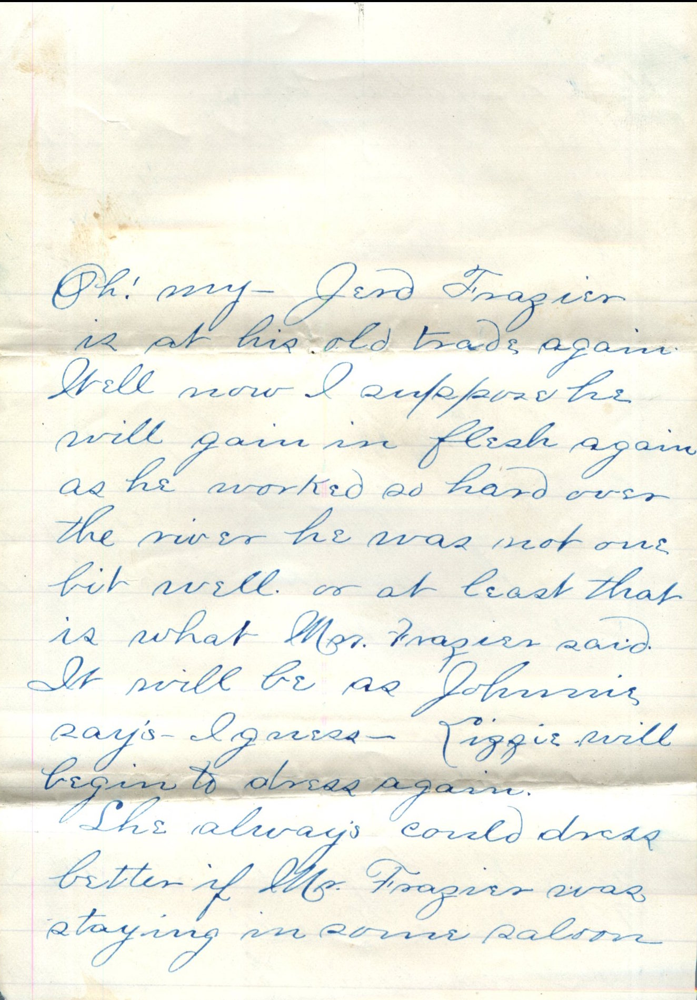
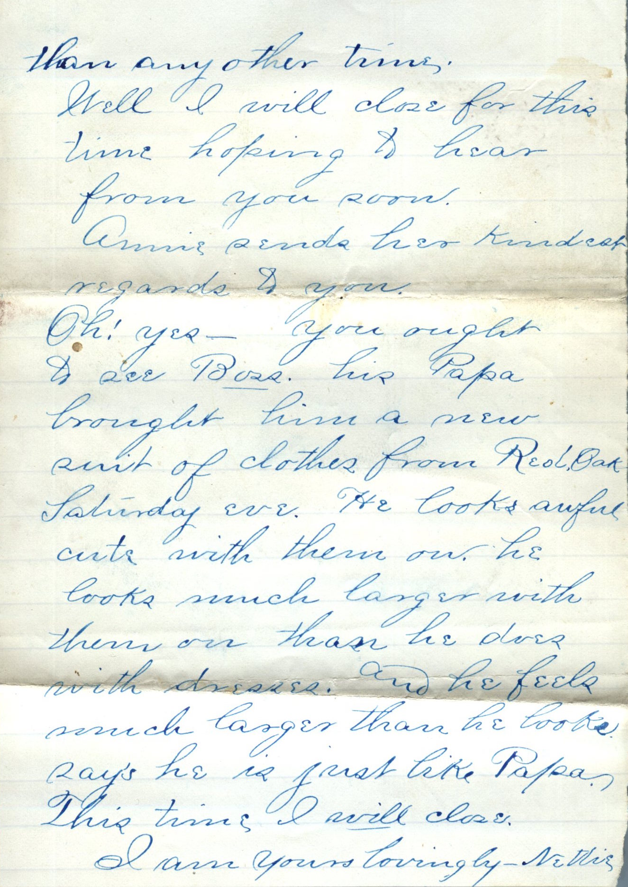
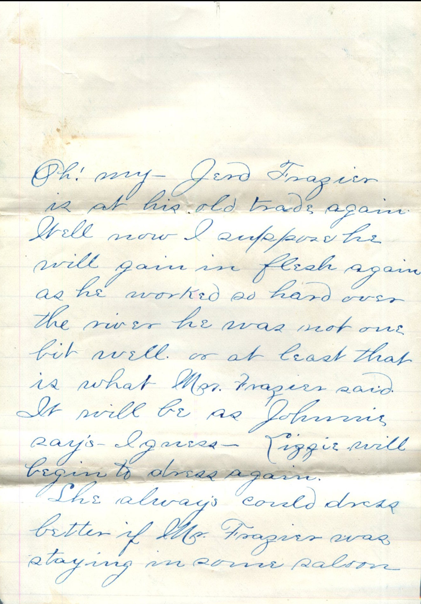
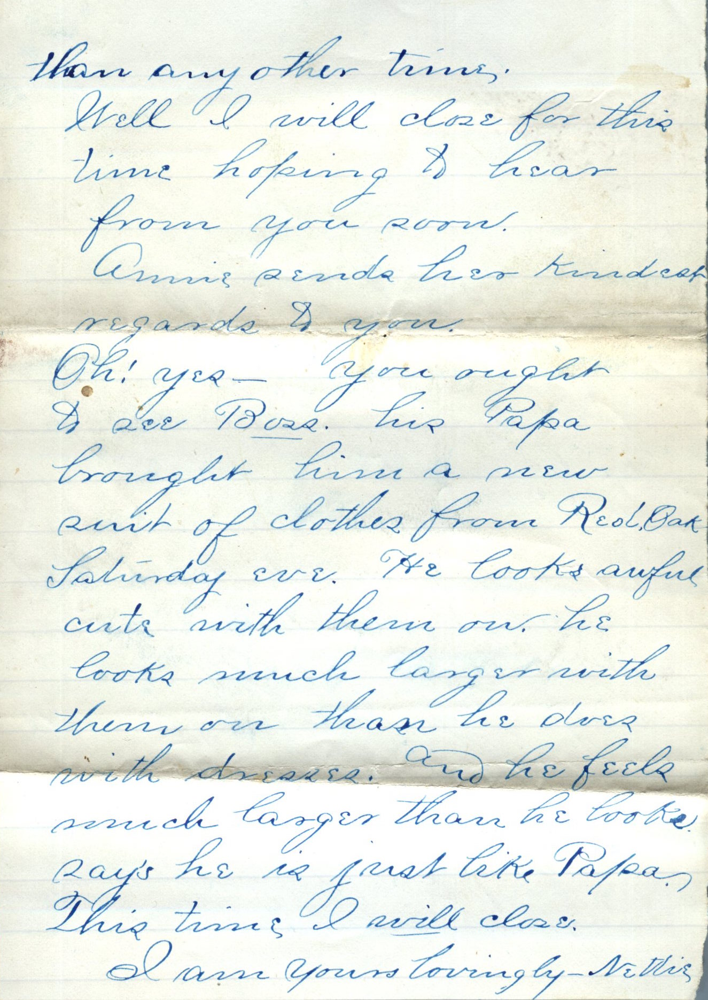

From: Jeanette Knox Chandler, To: Elijah H. Chandler
 
From: Jeanette Knox Chandler, To: Elijah H. Chandler Mailed From: Sidney, Iowa on October 18th, 1886
Sidney, Ia Oct 18th 1886 Mr. E.H. Chandler my Dearest Friend, Your most welcome letter received 16th (Sat.) and contents perused with great pleasure and now I will make an attempt to scribble a few lines in ans. I would have written yesterday (Sun.) only Will and Erin Kidd was here and spent the greater portion of he day. Anyway, I could not have sent it out from here until today had I written yesterday. I know it is of no use for me to try to write you the good long letter you wrote me. That I will do the best I can. I always long for your letters to come for you tell me more news about home than the home letters I get. Maggie is real good to write long letters. I got one from her the same day I got yours. It was such a large one she had to pay extra postage on it. She wrote me 1 and 1/2 sheet of Fools cap paper and another little piece besides and then with your goo long letter, I got plenty of news that day. On the day before I received yours I received two letters. One from Pa and the other from Johnnie. I think you all are awful good to write to me and I do love to get letters from home. I am writing on the paper you sent me. This is the first I have used of it. I think it is too bad that you have to work so long over your time and have to miss church too. But one good thing is-it is not very often they keep you that way. I suppose it did seem rather lonely without Maggie or I either. But now Maggie has returned and I guess keeps you all plenty of company telling all she seen and heard while at the fair. Well she is better off than I for she has been to St. Louis now twice and I have never been there. I expect she had a grand time from what she said in her letter to me. Well I suppose Army Lakin is well satisfied now that she is married again. I do not know her husband at all. What kind of a man is he- He must have some money or they could not afford to board. Well Pearl is losing some of her citizens. Bill Stewart and Whit Brown. Well I must say I don't think Whit will be much of a loss. Do you think so? I suppose you will find it rather lonely without Stewart as you two are together very much. So Mrs. Lannery and sister are visiting in Pearl. I am acquainted with Mrs. Lannery but not her sister. I have never seen her. Is Mr. Lannery and children there also? Oh yes - you had good reason for thinking of the last Saturday evening I spent in Pearl when with Billie Miller. Well I often think of our slopping place on the R.R. too. One time especially I think of very often. That time when Miss Boulton was our main subject and when I wished that I had stayed in Sidney so often also the night that I thought some one was under the bridge. Do you remember? Lige I do believe you. Don't say you think I do but make up your mind to say- you know I do. I do not know what month would be best at present but think it could be either the month of May or June which ever one would be preferable. Of course we may change our minds as to the time but now I think perhaps it could be there. I must say that I think Mr. Hess and Miss Frazier make themselves very busy about Miss Bartton. But Lizzie always did talk for Miss Button. I will tell you lots of things some day that she told me. I do not know how it is. Has Hattie come to Pearl yet. I suppose she surely is coming or at least mentioned it or Lizzie would not have been to the train. Oh my! Jed Frazier is at his old trade again. Well now I suppose he will gain in flesh again as he worked so hard over the river he was not one bit well or at least that is what Mr. Frazier said. It will be as Johnnie says I guess. Lizzie will begin to dress again. She always could dress better if Mr. Frazier was staying in some saloon than any other time. Well I will close for this time hoping to hear from you soon. Annie sends her kindest regards to you. Oh yes! You ought to see Boss his Papa brought him a new suit of clothes from Reol Oak Saturday eve. He looks awful cute with them on. He looks much larger with them on than he does with dresses. And he feels and says he is just like Papa. This time I will close.
I am yours lovingly -Nettie